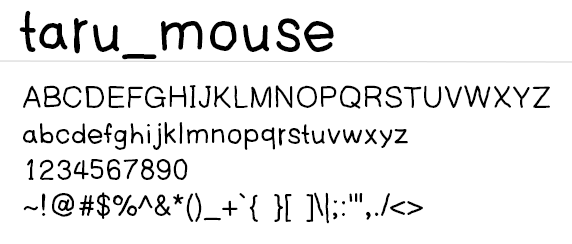

TTF 다운로드
OTF 다운로드
마우스로 한땀한땀 그린 taru_mouse 영문 폰트 무료배포 합니다.
taru_mouse 폰트는 OFL 라이센스를 따르고 있습니다. 폰트 단독 판매를 제외한 개인/상업용 어떠한 용도로도 자유롭게 사용하실 수 있습니다.
자세한 라이센스 전문은
scripts.sil.org/OFL
를 참고해주시기 바랍니다.
Copyrightⓒ2013
tarucy.net
All rights reserverd.
Contact to
work@tarucy.net